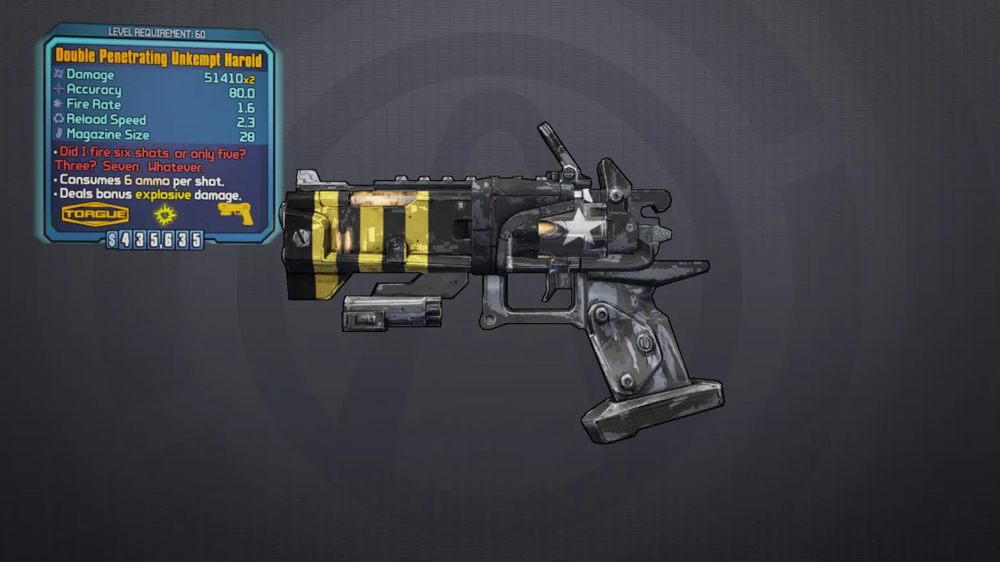
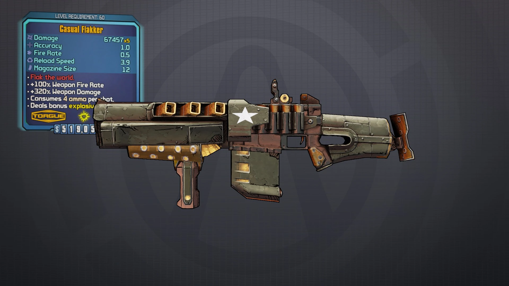
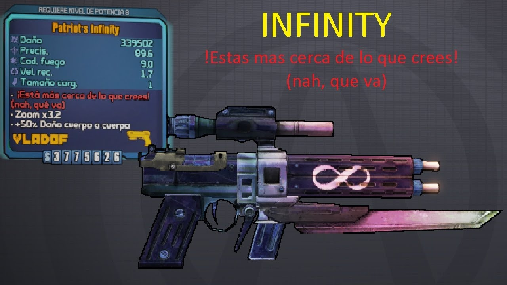

unkempt Harold

"¿he pegado seis tiros,ho solo cinco?¿oh an sido tres?¿siete?ah,que mas da"esta pistola se queda con el primer puesto por que es muy buena en todos los niveles ,por su daño y por su cargador y el efecto que tiene es que sus balas se dividen en 7 a sierta distancia y si considera que puede salir con la parte que hace que dispares dos valas por una estarias lanzando 14 balas esto se puede complementar con un escudo legendario the bee que hace que cada disparo tenga mas daño mas el efecto del slag hace que sea muy facila bajarle la vida a cualquier enemigo
flaker

"bombardea el mundo"es una escopeta digamos que diferente hace mucho daño pero tiene un 350% de daño de arma pero es algo engañoso esa descripcion ya que cuando se dispara las balas se combierten en explosiones que explotan en un area circular pero aleatoria lo ,dispara lento ,tiene retroceso lento y tiene una recarga lenta ,lo que coloca ala flaker en esta pocision es que existe en truco con ella que cuando la disparas y cambias de arma a un lanzacohetes con mucho daño el daño de ese lanzacohetes se transifere a las explosiones de la flaker y hace que tengan ese 350% de daño de armas ,pudiendo acabar con jefes y holeadas de enemigos facilmente
infinity

"esta mas cerca de lo que crees (na que va)"basicamente es una pistola con balas infinitas
lyuda

"asesesina de hombres"la principal caracteristica de este fusil de francotirador es si cadencia y tamaño de cargador ,tambian al disparar gerena dos balas a los costados .es perfeca para matar enemigos grandes y que tenga criticos en diferentes partes del cuerpo
conference call

"llamemos a todo el mundo ala vez",esta arma se caracteriza por que cuando disparas los perdigones que salen de la escopeta de enfrente generan perdigones adicionales a los lados para impactar de frente y a los lados a los enemigos